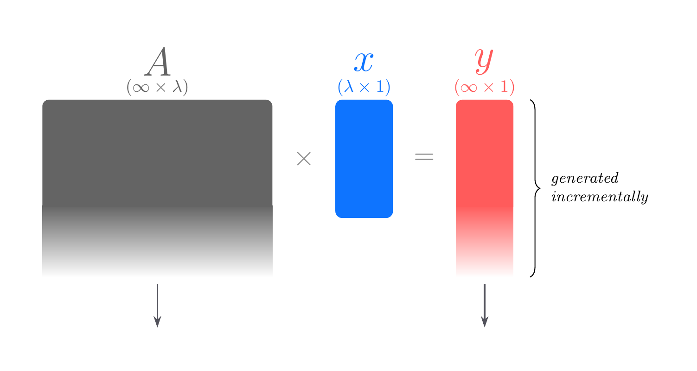
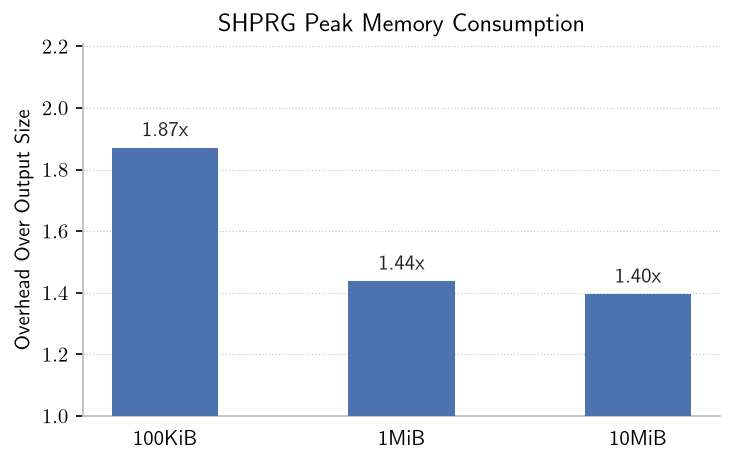

Seed-homomorphic pseudorandom generators (SHPRGs) are an emerging tool in the design of distributed cryptographic protocols. Despite their growing popularity in the theoretical cryptography literature, I was unable to find an answer to the question:
How can we get arbitrary (polynomial) length outputs from SHPRGs?
With a standard length-doubling PRG, we can expand a seed once, and we can use the two halves of the output to seed two more expansions, whose outputs can then seed four expansions, and so on, until we have the length we desire. It would seem natural to apply the same technique to an SHPRG, but doing so breaks the homomorphism.
In response, it seems that the standard approach to arbitrary stretch for SHPRGs is to just make the PRG produce really long outputs the first (and only) time we evaluate it. This seems fine, except that producing really long outputs in a single shot requires us to store really big public parameters (think Terabytes), which won't work in practice.
This note is about solving this problem in practice. In short, we can store a compressed representation of the really big public parameter and only materialize it piece by piece.
A pseudorandom generator (PRG) is an algorithm that takes a small amount of randomness and deterministically expands it to a long value that is hard to distinguish from true randomness.
A seed-homomorphic PRG (SHPRG) is a PRG with an extra homomorphism property in the seeds. Let \((\mathcal{X}, \oplus)\) be the seed space equipped with some group operation \(\oplus\), and let \((\mathcal{Y}, \otimes)\) be the output space equipped with some group operation \(\otimes\). If the PRG function is called \(G\), then for any two seeds \(s_1, s_2 \in \mathcal{X}\), the homomorphism property states that \[G(s_1 \oplus s_2) = G(s_1) \otimes G(s_2)\] In this note, I'll be discussing a particular SHPRG construction built on lattices, whose security depends on the Learning with Rounding (LWR) assumption, which is equivalent to the Learning with Errors (LWE) assumption.
This construction works as follows. Let \(\mathcal{X} = \mathbb{Z}_q^\lambda\), where the group operation is addition mod \(q\), and let \(\mathcal{Y} = \mathbb{Z}_p^\ell\), where the group operation is addition mod \(p\), for \(p < q\). We sample a random matrix \(A \in \mathbb{Z}_q^{\ell \times \lambda}\). To expand a seed \(s \in \mathbb{Z}_q^\lambda\) to length \(\ell\), we multiply \(s\) by \(A\) and then round the output. \[G_\mathrm{LWR}(s) = \lfloor A \cdot s \rfloor_p = (A \cdot s) \cdot (p / q) \mod p\] In practice, \(q\) and \(p\) will both be powers of two, e.g., \(q = 2^{128}\) and \(p = 2^{64}\), so the rounding operation is equivalent to a bitshift.
The PRG outlined above is only almost homomorphic, because the rounding operation introduces one bit of error. That is, \[G_\mathrm{LWR}(s_1 + s_2) = G_\mathrm{LWR}(s_1) + G_\mathrm{LWR}(s_2) + \{-1, 0, +1\}^\ell\] The error in the homomorphism is what makes arbitrary polynomial stretch so hard.
When using a PRG, we frequently want to be able to generate very long pseudorandom strings. A common motivation is that we want to mask (i.e., encrypt) a long message. For my purposes, I'm using the SHPRG to mask a machine learning model, which can easily be Megabytes in size for the models I'm using, and modern frontier models are now many Gigabytes. So, for the rest of this note, let's say our goal is to generate one Gigabyte of randomness.
How do other PRGs generate so much randomness? Some, like AES or ChaCha, are actually pseudorandom functions, and we can evaluate the function at many points for a given key/seed. Others act as length-doubling PRGs, so we expand a short seed to an output of twice the length of the seed, and we use each half of the output as the seed to the next round of expansion.
Neither of these approaches works for the LWR-based SHPRG. First of all, the SHPRG is really a PRG and not just a PRF in disguise, so querying it at multiple points for a fixed key/seed is not possible.
Second, and more interestingly, if we were to set \(\ell = 2\lambda\) to make it a length-doubling PRG, the second expansion breaks the homomorphism. Let's see why.
We will need to split every output of the form \(G(s)\) into a left and right half, which we'll call \(G(s)_L\) and \(G(s)_R\). What we want is for \(G(G(s_1)_L + G(s_2)_L)\) to equal \(G(G(s_1)_L) + G(G(s_2)_L) + e\) for some small error \(e \in \{-1, 0, +1\}^{2\lambda}\). However, what we have instead is \[G(G(s_1)_L + G(s_2)_L) = G(G(s_1 + s_2)_L + e) = G(G(s_1 + s_2)_L) + G(e) + e'\] where all steps above follow by the homomorphism property. The \(G(e)\) term is the killer, because it means that the error in the homomorphism gets randomized to large magnitude values. In fact, there's nothing we can do to correct for \(G(e)\), because for suitable parameters, \(G(e)\) is itself pseudorandom and hard to predict.
So, applying the length-doubling PRG paradigm to SHPRGs won't work. What can we do?
The idea behind this note is that we can make the public parameter matrix arbitrarily large to allow for arbitrary expansion, and we can do so while only ever materializing a single row of the matrix at a time.
We generate the public parameter matrix by sampling a standard PRG seed (e.g., an AES key). Every element \(y_i\) in the output vector is generated by rounding the dot product of the \(i^\mathrm{th}\) row of the matrix and the SHPRG seed vector. We can expand the standard PRG seed to materialize the first row and compute the first element \(y_1\), then materialize the second row to compute the second element \(y_2\), and so on. To compute each element, we only need one row of the matrix to be materialized.

There are two benefits to this approach.
The first point is important when the values to be masked have an unknown size, as we do not need to decide on a bound up front.
The second point is more important in practice, as it completely alleviates the main constraint of this SHPRG construction, which is the memory consumption. Consider a more typical SHPRG matrix \(A \in \mathbb{Z}^{\ell \times \lambda}\). We’re only going to be generating \(\ell\) random elements, but we must pay the cost of storing \(\ell \times \lambda\) elements, a \(\lambda \times\) overhead. In practice, I'm using \(\lambda = 3072\) (determined according to the Lattice Estimator for my parameters). This means that generating a Gigabyte of randomness consumes \(3\) Terabytes of memory. This is really bad!
In constrast, to generate \(1\) Gigabyte of randomness with the partial materialization approach outlined above, we only need a small overhead over the \(1\) Gigabyte needed just to store the output, which is feasible even on pretty weak hardware.
I implemented this technique in my secure aggregation library. How does it perform in practice? The results are pretty good.
First of all, it works! It generates incrementally and returns correct results.
The performance could use some work. My first draft implementation does not include much optimization, and it generates pseudorandomness at a rate of 0.5 MB/s.
At that rate, it would take about half an hour to generate 1 GB of pseudorandomness. The main area for improvement would be to increase the generation rate. Parallelism could help, but my goal is speed on consumer hardware, so parallelism isn't a magic solution here.
Finally, the memory consumption problem has been completely solved, which was really the primary motivation for this note in the first place. As expected, there's a small memory overhead that decreases as we generate more randomness.

This note describes some of the difficulties of translating elegant theoretical tools into clean and efficient implementations. If anybody reading this has implemented or plans to implement an SHPRG, I'd love to hear about it!